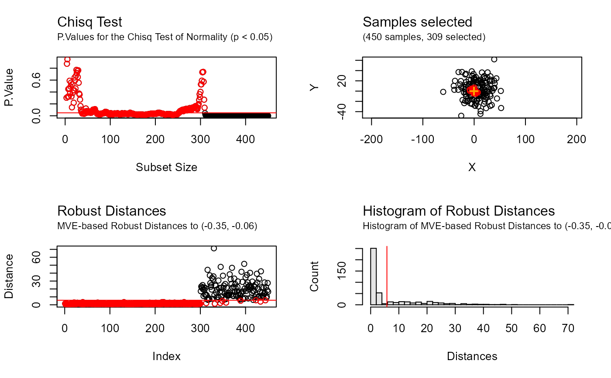

Recursive outlier filtering based on robust distances and multinormality tests
Source:R/filter_outliers.R
filter_outliers.RdRecursive outlier filtering based on robust distances and multinormality tests
filter_outliers( data, center, test = "Mardia", threshold = 0.05, distType, trimmedPerIteration = 1, debug = FALSE, warnings = FALSE )
Arguments
| data | Matrix of numerical values containing the observations (one per row, with two columns for X and Y coordinates) |
|---|---|
| center | Coordinates used to order samples based on their euclidian distance (array of numerical values) |
| test | Statistical test used. Valid options are "DIP" for unimodality test, or "Mardia", "Kurtosis", "Skewness", "KS", "KS-adj", "Shapiro", "Lillie", and "Chisq" for multivariate normality test |
| threshold | Threshold of significance for the statistical test (default: 0.05) |
| distType | Distance metric used to order the samples. Valid options are "Euclidean", "MCD", "MVE", and "OGK". If empty or null, "Euclidean" will be automatically selected for unimodality tests, and "MCD" for normality tests. |
| trimmedPerIteration | Number of samples trimmed at each iteration (default: 1) |
| debug | Logical value. |
| warnings | Logical value, to display the warnings and errors caught |
Value
The function returns an S3 object of type BRIL.Filtering
containing the following values:
callParameters of the call to the function (i.e. data, test,
testType, center, threshold, trimmedPerIteration and distType)
distancesDistances of each sample from data to the center
provided
p.valuesP.Values of the test at each iteration
index.p.valuesSubset size corresponding to each P.Value, for plotting purpose
selectedIndices of the samples from data selected at the end of
the filtering
cutoffDistanceDistance of the furthest inlier selected at the end of the filtering
Details
For unimodality tests parameter distType should be set to
"Euclidean" (as the distribution might contains a large amount of
outliers). For normality tests robust distances are preferable, based on
robust estimate estimates of location and scatter ("MCD","MVE", or "OGK").
See also
Examples
## Example 1 # illustrative data XY <- rbind( mvtnorm::rmvnorm(300, c(0, 0), diag(2) * 3 - 1), mvtnorm::rmvnorm(100, c(15, 20), diag(2)), mvtnorm::rmvnorm(150, c(-10, 15), diag(2) * 2 - 0.5), mvtnorm::rmvnorm(200, c(5, 5), diag(2) * 200) ) # compute an estimate for the center center <- median_rec(XY)$median # remove non unimodal outliers from this location filtering <- filter_outliers(XY, center, test = "DIP", debug = TRUE) print(filtering, maxDisplayed = 200)#> #> => Results for filter_outlier() using DIP Unimodality Test (p.value > 0.05) and Euclidean Distances #> 750 samples: 404 selected, 346 filtered (1 trimmed per iteration) #> #> Selected indices: #> [1] 40 146 241 189 225 98 258 220 203 251 278 70 181 50 266 57 72 124 #> [19] 100 32 97 284 3 128 208 17 22 272 274 25 37 187 192 221 298 83 #> [37] 222 269 84 239 129 273 141 249 42 152 142 114 93 281 52 99 65 224 #> [55] 123 96 103 162 1 282 86 148 159 18 45 88 29 176 15 90 51 46 #> [73] 144 228 161 130 223 26 154 41 261 113 229 16 175 2 8 300 53 156 #> [91] 81 237 234 143 235 92 230 85 232 202 132 135 247 182 299 206 214 56 #> [109] 87 23 169 280 109 205 188 13 191 74 55 171 260 216 28 38 126 4 #> [127] 7 170 131 54 163 183 117 27 155 184 62 164 44 186 160 254 713 35 #> [145] 116 259 139 125 147 179 209 77 569 110 263 193 231 49 95 207 297 199 #> [163] 157 286 670 80 76 64 127 145 226 106 79 213 215 137 5 177 121 104 #> [181] 711 68 243 73 289 268 204 10 270 19 287 167 59 276 105 136 140 210 #> [199] 292 119 #> ... (204 hidden) #> #> DIP Test p.values: #> [1] 0 0 0 0 0 0 0 0 0 0 0 0 0 0 0 0 0 0 0 0 0 0 0 0 0 0 0 0 0 0 0 0 0 0 0 0 0 #> [38] 0 0 0 0 0 0 0 0 0 0 0 0 0 0 0 0 0 0 0 0 0 0 0 0 0 0 0 0 0 0 0 0 0 0 0 0 0 #> [75] 0 0 0 0 0 0 0 0 0 0 0 0 0 0 0 0 0 0 0 0 0 0 0 0 0 0 0 0 0 0 0 0 0 0 0 0 0 #> [112] 0 0 0 0 0 0 0 0 0 0 0 0 0 0 0 0 0 0 0 0 0 0 0 0 0 0 0 0 0 0 0 0 0 0 0 0 0 #> [149] 0 0 0 0 0 0 0 0 0 0 0 0 0 0 0 0 0 0 0 0 0 0 0 0 0 0 0 0 0 0 0 0 0 0 0 0 0 #> [186] 0 0 0 0 0 0 0 0 0 0 0 0 0 0 0 #> ... (548 hidden) #> #> Outliers cutoff distance from center (-0.183547170786728, -0.0147528844099991): #> [1] 16.20626 #> #> #> EuclideanDistances: #> [1] 0.78265025 1.03709340 0.50455330 1.40050604 1.81774791 2.36438121 #> [7] 1.40503458 1.03843016 2.21171173 1.90849684 2.03917736 2.26891057 #> [13] 1.28513073 2.58585927 0.84116422 1.03291253 0.51152751 0.82368595 #> [19] 1.91187352 2.27939847 2.29694489 0.51385663 1.24261046 2.15223645 #> [25] 0.54256108 0.91483257 1.43231538 1.35212605 0.83858092 2.40054212 #> [31] 2.55126663 0.46492219 2.32233249 3.62173933 1.51217528 2.50170401 #> [37] 0.54394548 1.35605425 3.11531719 0.01061001 0.93888417 0.67400258 #> [43] 3.74638392 1.47862060 0.82521701 0.88584097 3.96287457 3.92273189 #> [49] 1.59758424 0.36677891 0.84585553 0.70809075 1.06903927 1.41371140 #> [55] 1.32055931 1.19950325 0.41395719 2.16545809 1.96725561 2.05855964 #> [61] 2.54182791 1.44976236 4.10005512 1.71726793 0.75416404 2.75646847 #> [67] 2.76374735 1.86929057 2.50333169 0.34517806 3.23653895 0.42506009 #> [73] 1.87954478 1.29073629 2.53901317 1.69517519 1.54584672 2.36917107 #> [79] 1.78125560 1.66832971 1.07926601 3.12364129 0.60696220 0.64835298 #> [85] 1.12444112 0.80003546 1.22265232 0.83809416 2.87545819 0.84402645 #> [91] 2.79930581 1.10909510 0.69082680 3.59957795 1.61779576 0.77135543 #> [97] 0.47154642 0.19571872 0.71381327 0.44029017 2.40497137 3.38532828 #> [103] 0.77565310 1.86239005 1.97729441 1.75186211 2.38229858 2.48727854 #> [109] 1.26349115 1.56170253 2.68971690 3.73482840 1.00243563 0.68670818 #> [115] 2.68204404 1.53275736 1.43087654 3.17704692 2.01844142 2.30786493 #> [121] 1.86052813 3.46389053 0.75677314 0.43274783 1.53932603 1.39193862 #> [127] 1.72983793 0.50569535 0.66162356 0.90157815 1.40705744 1.15604039 #> [133] 2.12190185 2.11207403 1.15646074 1.97917970 1.79650271 2.67132900 #> [139] 1.53374253 1.99318138 0.66257895 0.68521184 1.08650105 0.88750817 #> [145] 1.73636287 0.08373658 1.54219915 0.80899927 2.61378619 3.75329862 #> [151] 2.99847270 0.68049517 4.47911711 0.91599120 1.43672020 1.07399690 #> [157] 1.63530479 3.06710119 0.81025627 1.48551851 0.90085043 0.78103816 #> [163] 1.42363606 1.47846716 2.51597352 3.39740334 1.95993906 4.45234612 #> [169] 1.24626930 1.40536049 1.33186763 2.56593216 4.20770265 2.62981088 #> [175] 1.03315876 0.84033173 1.83188965 2.07922881 1.54224164 3.76991213 #> [181] 0.35723476 1.18232495 1.42678820 1.44211498 2.54127413 1.47983791 #> [187] 0.55360902 1.27476116 0.12867872 4.66372962 1.28513735 0.56535697 #> [193] 1.57140023 3.88522818 2.48769679 5.44567873 3.40638973 2.63579352 #> [199] 1.63087639 2.11770218 #> ... (550 hidden) #>## Example 2 # illustrative data XY <- rbind(mvtnorm::rmvnorm(300, c(0, 0), diag(2)*4-1.5), mvtnorm::rmvnorm(150, c(5, 5), diag(2)*400)) # compute an estimate for the center center <- median_rec(XY)$median # remove non normal outliers from this location filtering <- filter_outliers(XY, center, test = "Chisq", distType = "MVE", debug = TRUE) print(filtering)#> #> => Results for filter_outlier() using Chisq Normality Test (p.value > 0.05) and MVE-based Robust Distances #> 450 samples: 309 selected, 141 filtered (1 trimmed per iteration) #> #> Selected indices: #> [1] 93 180 23 213 37 194 149 186 187 52 95 15 42 260 3 177 39 19 #> [19] 108 153 206 267 10 137 119 100 291 262 64 230 140 76 278 16 116 11 #> [37] 210 266 8 297 255 272 65 192 107 251 183 142 204 132 214 5 43 106 #> [55] 222 241 2 145 90 144 160 9 248 289 293 74 78 72 270 195 136 178 #> [73] 286 115 69 170 83 209 182 38 237 59 225 274 151 161 141 150 292 245 #> [91] 68 146 249 277 24 44 89 102 223 135 236 198 139 67 157 12 7 276 #> [109] 200 128 129 229 84 197 239 174 105 85 60 152 125 91 166 121 196 49 #> [127] 165 154 147 79 228 199 285 94 111 242 51 97 27 70 58 156 163 99 #> [145] 208 162 233 112 45 269 179 13 207 212 101 6 265 205 221 273 80 32 #> [163] 258 250 56 256 87 253 30 29 138 20 92 300 235 114 96 332 224 238 #> [181] 234 220 181 46 202 190 275 244 271 25 82 189 120 226 148 246 143 218 #> [199] 41 133 #> ... (109 hidden) #> #> CHISQ Test p.values: #> [1] 0.000000e+00 0.000000e+00 0.000000e+00 0.000000e+00 0.000000e+00 #> [6] 0.000000e+00 0.000000e+00 0.000000e+00 0.000000e+00 0.000000e+00 #> [11] 0.000000e+00 0.000000e+00 0.000000e+00 0.000000e+00 0.000000e+00 #> [16] 0.000000e+00 0.000000e+00 0.000000e+00 0.000000e+00 0.000000e+00 #> [21] 0.000000e+00 0.000000e+00 0.000000e+00 0.000000e+00 0.000000e+00 #> [26] 0.000000e+00 0.000000e+00 0.000000e+00 0.000000e+00 0.000000e+00 #> [31] 0.000000e+00 0.000000e+00 0.000000e+00 0.000000e+00 0.000000e+00 #> [36] 0.000000e+00 0.000000e+00 0.000000e+00 0.000000e+00 0.000000e+00 #> [41] 0.000000e+00 0.000000e+00 0.000000e+00 0.000000e+00 0.000000e+00 #> [46] 0.000000e+00 0.000000e+00 0.000000e+00 0.000000e+00 0.000000e+00 #> [51] 0.000000e+00 0.000000e+00 0.000000e+00 0.000000e+00 0.000000e+00 #> [56] 0.000000e+00 0.000000e+00 0.000000e+00 0.000000e+00 0.000000e+00 #> [61] 0.000000e+00 0.000000e+00 0.000000e+00 0.000000e+00 0.000000e+00 #> [66] 0.000000e+00 0.000000e+00 0.000000e+00 0.000000e+00 0.000000e+00 #> [71] 0.000000e+00 0.000000e+00 0.000000e+00 0.000000e+00 0.000000e+00 #> [76] 0.000000e+00 0.000000e+00 0.000000e+00 0.000000e+00 0.000000e+00 #> [81] 0.000000e+00 0.000000e+00 0.000000e+00 0.000000e+00 0.000000e+00 #> [86] 0.000000e+00 0.000000e+00 0.000000e+00 0.000000e+00 0.000000e+00 #> [91] 0.000000e+00 0.000000e+00 0.000000e+00 0.000000e+00 0.000000e+00 #> [96] 0.000000e+00 0.000000e+00 0.000000e+00 0.000000e+00 0.000000e+00 #> [101] 0.000000e+00 0.000000e+00 0.000000e+00 0.000000e+00 0.000000e+00 #> [106] 0.000000e+00 0.000000e+00 0.000000e+00 0.000000e+00 0.000000e+00 #> [111] 0.000000e+00 0.000000e+00 0.000000e+00 0.000000e+00 0.000000e+00 #> [116] 0.000000e+00 0.000000e+00 0.000000e+00 0.000000e+00 0.000000e+00 #> [121] 0.000000e+00 0.000000e+00 0.000000e+00 0.000000e+00 0.000000e+00 #> [126] 0.000000e+00 0.000000e+00 7.538414e-14 1.423206e-11 5.032689e-10 #> [131] 1.105406e-09 4.155043e-09 4.647774e-08 4.182229e-07 3.017593e-06 #> [136] 4.365846e-05 1.810972e-04 7.224824e-04 2.843098e-03 1.419577e-02 #> [141] 4.415656e-02 1.365993e-01 2.706718e-01 5.728695e-01 7.384673e-01 #> [146] 7.320235e-01 7.326504e-01 5.908536e-01 5.279402e-01 5.281540e-01 #> [151] 4.024054e-01 3.133749e-01 3.622226e-01 2.657117e-01 1.980392e-01 #> [156] 1.724076e-01 1.371761e-01 1.107602e-01 1.249799e-01 1.389936e-01 #> [161] 1.570196e-01 1.636245e-01 1.510617e-01 1.525814e-01 1.352653e-01 #> [166] 1.444911e-01 1.353756e-01 1.225837e-01 1.380906e-01 1.074813e-01 #> [171] 9.640784e-02 1.003121e-01 1.064443e-01 1.029178e-01 1.302346e-01 #> [176] 1.023569e-01 1.064896e-01 1.073218e-01 1.125481e-01 9.975530e-02 #> [181] 9.090734e-02 1.186315e-01 9.641207e-02 1.148576e-01 8.897710e-02 #> [186] 9.628380e-02 1.080193e-01 8.542718e-02 7.681969e-02 9.230312e-02 #> [191] 1.018150e-01 8.794615e-02 9.358689e-02 8.670333e-02 7.830516e-02 #> [196] 8.176017e-02 7.421798e-02 5.101825e-02 5.600291e-02 4.122122e-02 #> ... (248 hidden) #> #> Outliers cutoff distance from center (-0.35419816621406, -0.0637070921368186): #> [1] 5.768314 #> #> #> MVE-based RobustDistances: #> [1] 1.54832855 0.61107392 0.27933351 1.82287630 0.57842506 1.21306810 #> [7] 0.92005041 0.49131337 0.64658245 0.36012873 0.47187241 0.91755561 #> [13] 1.20135616 1.74065024 0.26841186 0.44314250 1.60210489 2.12437595 #> [19] 0.32378018 1.32567712 2.91613723 2.14403649 0.03410595 0.84546025 #> [25] 1.46630152 1.53526996 1.11219333 2.57741174 1.30835776 1.30652588 #> [31] 1.82100984 1.26069617 2.27918870 1.92917589 2.21681334 2.12282490 #> [37] 0.12125610 0.76740268 0.30348598 3.35366738 1.50968721 0.27338703 #> [43] 0.57940249 0.86835386 1.17108959 1.43298167 1.51066357 2.31355085 #> [49] 1.03028499 2.09406943 1.10885091 0.21392270 2.39952765 1.59679243 #> [55] 1.52533846 1.26825927 1.89114577 1.12540255 0.77814012 0.97712307 #> [61] 1.68908403 1.52730541 1.53084706 0.41124263 0.53670217 2.30839307 #> [67] 0.90961851 0.83080873 0.71810612 1.11588442 1.56287528 0.66755714 #> [73] 2.76851412 0.66484549 1.66092255 0.43800820 1.57272975 0.66600269 #> [79] 1.07717200 1.25443854 1.71338257 1.46846140 0.73861298 0.94649017 #> [85] 0.97497719 1.74294977 1.27193997 1.69866374 0.86878235 0.62114576 #> [91] 0.98680479 1.32630161 0.01821830 1.09310909 0.22035398 1.36642285 #> [97] 1.10995838 2.11316622 1.13062756 0.39501902 1.20754337 0.88059918 #> [103] 2.35277670 1.86656774 0.97144613 0.59877892 0.54150598 0.32442723 #> [109] 2.25214994 1.65773623 1.09462930 1.16503056 1.66301708 1.35333165 #> [115] 0.71755479 0.46659909 2.27038819 2.41472768 0.38590704 1.47525432 #> [121] 1.00793957 2.02233512 1.57059729 1.66708528 0.98283304 2.38837696 #> [127] 2.09914046 0.92795919 0.93162809 2.34425184 3.34097833 0.57402055 #> [133] 1.50969919 2.00198495 0.88371733 0.68314215 0.38244931 1.31970784 #> [139] 0.90454570 0.42568167 0.82174420 0.55107768 1.49881977 0.62601703 #> [145] 0.61711334 0.83317315 1.04385786 1.49051924 0.15639110 0.82217059 #> [151] 0.80628648 0.97860646 0.34321256 1.03719468 2.12488199 1.12994323 #> [157] 0.91327713 1.96883439 1.51507537 0.64027932 0.80966134 1.13613500 #> [163] 1.12999510 1.94188148 1.03128307 0.99446955 2.12576944 1.63834208 #> [169] 1.63561113 0.72073936 2.25815478 1.95221293 1.82503987 0.96521469 #> [175] 1.75045571 1.99891973 0.28703081 0.68595507 1.19267323 0.02845048 #> [181] 1.40763555 0.75449756 0.54785318 2.00596769 2.35669675 0.18821689 #> [187] 0.20616091 2.59011277 1.47015757 1.45625790 1.86479341 0.53718366 #> [193] 1.82749494 0.14213744 0.68241835 1.01113492 0.94754187 0.88763639 #> [199] 1.08238590 0.92305555 #> ... (250 hidden) #>